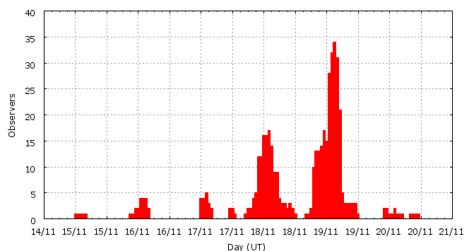

Activity profile
Activity profileThis page shows automated results of the Leonids 2006, based on visual data entered through the IMO electronic report form. This page is an experiment, send your feedback to Geert Barentsen. Source code is made available on the project pages. Note that automated results are not suitable for scientific use!
Page generated on 14 February 2007 at 8:02 UT.
ZHRmax = 64 based on 2594 meteors in 655 data intervals, assuming fixed population index r = 2.5 and zenith correction 1/sin(hR).

| Time (UT) | Solarlon | nINT | nLEO | ZHR | |
|---|---|---|---|---|---|
| 2006-11-15 02:17 | 232.476 | 4 | 6 | 4 | +-2 |
| 2006-11-16 01:19 | 233.443 | 7 | 18 | 6 | +-1 |
| 2006-11-16 03:25 | 233.531 | 5 | 22 | 9 | +-2 |
| 2006-11-17 02:00 | 234.480 | 10 | 88 | 23 | +-2 |
| 2006-11-17 12:13 | 234.909 | 2 | 15 | 8 | +-2 |
| 2006-11-17 21:49 | 235.312 | 15 | 27 | 11 | +-2 |
| 2006-11-18 01:04 | 235.449 | 44 | 208 | 18 | +-1 |
| 2006-11-18 03:14 | 235.540 | 30 | 210 | 18 | +-1 |
| 2006-11-18 04:44 | 235.604 | 32 | 202 | 24 | +-2 |
| 2006-11-18 09:34 | 235.807 | 13 | 47 | 15 | +-2 |
| 2006-11-18 11:42 | 235.896 | 2 | 13 | 13 | +-3 |
| 2006-11-18 21:22 | 236.303 | 19 | 66 | 21 | +-3 |
| 2006-11-19 00:29 | 236.434 | 53 | 200 | 25 | +-2 |
| 2006-11-19 02:04 | 236.500 | 73 | 200 | 18 | +-1 |
| 2006-11-19 03:01 | 236.540 | 56 | 202 | 20 | +-1 |
| 2006-11-19 03:39 | 236.567 | 57 | 203 | 29 | +-2 |
| 2006-11-19 04:12 | 236.590 | 53 | 200 | 44 | +-3 |
| 2006-11-19 04:31 | 236.603 | 49 | 205 | 55 | +-4 |
| 2006-11-19 04:50 | 236.616 | 59 | 206 | 64 | +-4 |
| 2006-11-19 05:46 | 236.655 | 52 | 149 | 28 | +-2 |
| 2006-11-19 11:08 | 236.882 | 3 | 24 | 12 | +-2 |
| 2006-11-20 02:36 | 237.532 | 9 | 58 | 21 | +-3 |
| 2006-11-20 05:27 | 237.652 | 8 | 25 | 11 | +-2 |
For each estimation interval: time is the middle of the interval, nINT is the number of observing periods and nLEO is the number of Leonids involved. ZHR = (1 + sum nLEO) / sum(Teff/C) where Teff is the effective observing time and C is the total correction for limiting magnitude, clouds and zenith correction. The solar longitudes refer to equinox J2000.0.
ZHRmax = 78 based on 1422 meteors in 416 data intervals, assuming fixed population index r = 2.5 and zenith correction 1/sin(hR).

| Time (UT) | Solarlon | nINT | nLEO | ZHR | |
|---|---|---|---|---|---|
| 2006-11-19 01:16 | 236.466 | 17 | 55 | 20 | +-3 |
| 2006-11-19 01:34 | 236.479 | 17 | 50 | 17 | +-2 |
| 2006-11-19 01:45 | 236.487 | 11 | 51 | 19 | +-3 |
| 2006-11-19 02:05 | 236.501 | 20 | 50 | 22 | +-3 |
| 2006-11-19 02:25 | 236.515 | 20 | 51 | 18 | +-2 |
| 2006-11-19 02:39 | 236.525 | 15 | 52 | 18 | +-2 |
| 2006-11-19 02:51 | 236.533 | 13 | 50 | 18 | +-3 |
| 2006-11-19 03:04 | 236.542 | 21 | 57 | 16 | +-2 |
| 2006-11-19 03:15 | 236.550 | 13 | 54 | 40 | +-5 |
| 2006-11-19 03:24 | 236.556 | 15 | 57 | 28 | +-4 |
| 2006-11-19 03:36 | 236.565 | 17 | 52 | 27 | +-4 |
| 2006-11-19 03:44 | 236.571 | 10 | 53 | 43 | +-6 |
| 2006-11-19 03:53 | 236.576 | 18 | 53 | 24 | +-3 |
| 2006-11-19 04:03 | 236.584 | 13 | 53 | 34 | +-5 |
| 2006-11-19 04:11 | 236.589 | 15 | 51 | 51 | +-7 |
| 2006-11-19 04:17 | 236.594 | 12 | 55 | 63 | +-8 |
| 2006-11-19 04:23 | 236.598 | 16 | 53 | 45 | +-6 |
| 2006-11-19 04:28 | 236.601 | 18 | 90 | 46 | +-5 |
| 2006-11-19 04:33 | 236.605 | 17 | 52 | 55 | +-8 |
| 2006-11-19 04:39 | 236.608 | 14 | 59 | 69 | +-9 |
| 2006-11-19 04:43 | 236.612 | 13 | 50 | 71 | +-10 |
| 2006-11-19 04:49 | 236.615 | 16 | 63 | 78 | +-10 |
| 2006-11-19 04:54 | 236.619 | 17 | 50 | 58 | +-8 |
| 2006-11-19 05:01 | 236.624 | 15 | 50 | 62 | +-9 |
| 2006-11-19 05:12 | 236.632 | 20 | 55 | 47 | +-6 |
| 2006-11-19 06:06 | 236.670 | 23 | 56 | 20 | +-3 |
For each estimation interval: time is the middle of the interval, nINT is the number of observing periods and nLEO is the number of Leonids involved. ZHR = (1 + sum nLEO) / sum(Teff/C) where Teff is the effective observing time and C is the total correction for limiting magnitude, clouds and zenith correction. The solar longitudes refer to equinox J2000.0.
Data has been received from 92 observers in 25 countries. Thank you for your efforts!

| Observer | Country | Teff | nLEO |
|---|---|---|---|
| Harshad Abhyankar | India | 1.90h | 4 |
| Ioan Agavriloaiei | Romania | 1.15h | 6 |
| Karl Antier | France | 4.33h | 65 |
| Julia Babina | Ukraine | 1.08h | 10 |
| Jaydeep Belapure | India | 2.00h | 13 |
| Felix Bettonvil | Netherlands | 2.92h | 34 |
| Sushrut Bhanushali | India | 1.00h | 12 |
| Hans Buchholtz | Denmark | 0.64h | 7 |
| Andreas Buchmann | Switzerland | 3.18h | 70 |
| Vasko Cacanoski | Macedonia | 4.03h | 40 |
| Ed Cannon | United States | 4.19h | 39 |
| Jakub Cerny | Czech Republic | 1.51h | 12 |
| Igor Chalenko | Ukraine | 2.41h | 9 |
| Sarthak Chandra | India | 0.83h | 7 |
| Marcin Chwala | Poland | 3.16h | 52 |
| Lorenzo Comolli | Italy | 2.27h | 41 |
| Tim Cooper | South Africa | 3.41h | 8 |
| Nadka Dankova | Bulgaria | 2.15h | 17 |
| Sarthak Dasadia | India | 4.50h | 22 |
| Judith De Koster | Netherlands | 1.95h | 6 |
| Samer Derbi | Jordan | 2.99h | 22 |
| Onkar Dixit | India | 1.50h | 19 |
| Jaka Dobaj | Slovenia | 1.79h | 37 |
| Kenneth Drake | United States | 0.92h | 11 |
| Shawn Dvorak | United States | 0.50h | 1 |
| Shlomi Eini | Israel | 3.30h | 55 |
| Eric Flescher | United States | 3.18h | 10 |
| Mitja Govedic | Slovenia | 2.00h | 8 |
| Robin Gray | United States | 4.05h | 18 |
| Peter Greskovic | Slovakia | 1.51h | 6 |
| Pavol Habuda | Slovakia | 4.29h | 41 |
| Torsten Hansen | Germany | 2.68h | 64 |
| Roberto Haver | Italy | 2.58h | 39 |
| Petr Horalek | Czech Republic | 3.55h | 55 |
| Martin Horenz | Germany | 2.08h | 19 |
| Sagar Joglekar | India | 1.50h | 8 |
| Carl Johannink | Netherlands | 13.08h | 218 |
| Kearn Jones | Australia | 2.00h | 10 |
| Bhargav Joshi | India | 2.77h | 6 |
| Javor Kac | Slovenia | 5.38h | 74 |
| Amol Kankariya | India | 1.00h | 4 |
| Roy Keeris | Netherlands | 2.14h | 11 |
| Prakash Khatri | India | 1.08h | 4 |
| Gyula Kiss | Hungary | 1.75h | 17 |
| Andre Knofel | Germany | 3.87h | 28 |
| Ralf Koschack | Germany | 1.60h | 27 |
| Jakub Koukal | Czech Republic | 14.50h | 85 |
| Richard Kramer | United States | 0.57h | 3 |
| Ashish Kuvelkar | India | 1.66h | 4 |
| Jens Lacorne | France | 2.89h | 29 |
| Anna S. Levina | Israel | 6.99h | 101 |
| Hartwig Luthen | Germany | 1.89h | 23 |
| Anetta Machon | Poland | 2.00h | 26 |
| Pierre Martin | Canada | 1.22h | 11 |
| Paul Martsching | United States | 8.00h | 35 |
| Alastair Mcbeath | United Kingdom | 6.67h | 28 |
| Mukul Mhaskey | India | 3.00h | 18 |
| Koen Miskotte | Netherlands | 18.95h | 300 |
| Sirko Molau | Germany | 0.88h | 21 |
| Yousef Mteir | Jordan | 1.83h | 12 |
| Sven Nather | Germany | 1.15h | 6 |
| Martin Nedved | Czech Republic | 3.85h | 27 |
| Robert Pomohaci | Romania | 1.00h | 22 |
| Nilesh Puntambekar | India | 3.15h | 13 |
| Tushar Purohit | India | 1.50h | 18 |
| Jurgen Rendtel | Germany | 4.68h | 37 |
| Basheer Saleh | Jordan | 1.50h | 7 |
| Dan Self | United Kingdom | 1.01h | 43 |
| Jonathan Shanklin | United Kingdom | 4.89h | 46 |
| Vladimir Slusarenko | Ukraine | 2.41h | 5 |
| Ulrich Sperberg | Germany | 2.85h | 14 |
| David Stine | United States | 3.00h | 6 |
| Boris Stoilov | Bulgaria | 5.41h | 27 |
| Martin Stojanovski | Macedonia | 4.34h | 49 |
| Wesley Stone | United States | 1.50h | 9 |
| Magda Streicher | South Africa | 1.62h | 7 |
| Oana Suciu | Romania | 2.99h | 23 |
| Khaled Tell | Jordan | 3.49h | 16 |
| Cristina Tinta | Romania | 2.04h | 8 |
| Rafael Ruben Torregrosa Soler | Spain | 2.00h | 21 |
| Josep Trigo Rodriguez | Spain | 2.15h | 30 |
| Blanca Troughton Luque | Portugal | 1.68h | 9 |
| Shigeo Uchiyama | Japan | 2.00h | 10 |
| Michel Vandeputte | Belgium | 11.94h | 268 |
| Daniel Van Os | Netherlands | 2.08h | 16 |
| Valentin Velkov | Bulgaria | 2.72h | 22 |
| Jan Verfl | Czech Republic | 1.51h | 12 |
| Frank Wachter | Germany | 1.95h | 21 |
| Sabine Wachter | Germany | 2.08h | 25 |
| Kim S. Youmans | United States | 3.00h | 8 |
| Weizhou Zeng | China | 3.19h | 17 |
| Wen Zhou | China | 2.00h | 8 |
Download the data intervals in csv-format: leo2006.csv.
Report errors to visual@imo.net!
More to come in the future...
{kind=link}